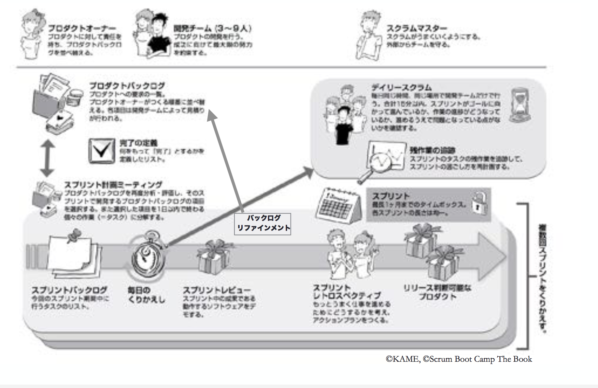

enPiT日記
1日目
1. アジャイル開発概論
アジャイル開発とは...人々が協働する力を最大限に活かして価値のあるソフトウェアを作り続けるための活動およびその方法。
ウォーターフォールモデル等のV字モデルでは、完成したものが顧客の欲しいものと違う仕上がりになってしまうことがあり、問題点とされている。
アジャイル開発は、開発の構造ではなく開発する人に注目するアプローチを行い、動くソフトウェアにより価値をおいたソフトウェア開発。
2. 協働のワークショップ
様々なルールによる制約の中で紙飛行機を飛ばすワークショップ。
たとえば
・飛行場から紙飛行機を飛ばし、３m以上飛んだものを成功とみなす
・紙飛行機の先端を尖らせてはいけない
・１つの紙を同じ人が連続して折ってはいけない
チームの中でリーダーなどの役割は決めず、全員で協働して取り組む。
見積もりを立て手から実際に紙飛行機を作成して飛ばし、振り返りを行うという工程を繰り返す。
3. アジャイル開発とスクラム
スクラムとは
煩雑で変化の激しい問題に対応するためのフレームワークである。
スクラムは軽量で理解が容易ですが、習得は困難です。
スクラムの仕組み
プロダクトオーナー
プロダクトバックログの優先順位の最終決定者
スクラムマスター
1.何を作るかをプロダクトオーナーが考える
2.どうやって作るかは開発チームが考える
3.定期的に作っているものとその進め方をチェックする
4.もっとよくできるように改善を繰り返す
5.スクラムマスターはこの仕組みがうまくまわるようにする
4. アジャイルチームのコミュニケーション
アジャイル開発では、HRTの法則(謙虚・尊敬・信頼)が重要です。 コミュニケーションの効率を上げる為には、無駄な会議をなくし、顔を合わせて会話できる時間を獲得する事が大切です。その為に、時間・場所・目的を固定して、会議の日程を持つと良いです。
永瀬先生のお話の後に、ワークショップを行いました。
ワークショップ：ペアを作りトランプで対戦
1.始めに５分間、ルールの書かれた用紙を読み込む
2.読み込んだルールを基に、ペア同士でトランプ対戦を行う (対戦中は私語厳禁・ジェスチャーは可能)
3.実はそれぞれの班に配られたルールは少しずつ違うところがあり、対戦中に違和感を感じるようにできている
2日目
ワークショップを通じて、チームの自己組織化と改善、チームワークによる反復的で漸進的なプロダクト開発のプロセスを体験する。
午前中は、チーム内のスクラムマスター、プロダクトオーナーなどの役割を決めて、ワークショップを進めていった。次に、作るもののテーマを決めた。遊園地や商店街などいろいろなアイディアが各チームから生まれた。
時間をスクラムマスターが管理し、限られた時間の中で各自のアイディアをブラッシュアップし、最低限、ユーザーにどのような機能を提供したいのか考えて、全体を交えたレビューを行い、講師や他の学生からのフィードバックをもらった。
その後に、隣のチームに自分たちの作りたいものを作ってもらうというワークショップを行い、実際の開発の中でプロダクトオーナーとのコミュニケーションの大切さを学んだ。
その後に、隣のチームに自分たちの作りたいものを作ってもらうというワークショップを行い、実際の開発の中でプロダクトオーナーとのコミュニケーションの大切さを学んだ。
5回スプリントを行い、皆からのフィードバックを随時もらい、より緊張感を高めることができた。
3日目
TDD入門$Coderetreat
TDDとは... Test Driven Development（テスト開発駆動）の略語。 アジャイル開発手法の一つであるエクストリームプログラミングのプラクティスから派生した開発手法。

Corderetreatとは... ソフトウェアの設計や実装に焦点を当て、集中的に練習するための機会のこと。 45分実践＋15分休憩のセットを繰り返し、簡単な課題にペアで取り組む。(たとえば、"FizzBuzz"，"Game of Life")
セッションごとに新しいペアを組み、書いたコードを消してゼロから始めるのがルール。
1. 次の目標を考える
2. その目標を示すテストを書く
3. そのテストを実行して失敗させる(Red)
4. 目的のコードを書く
5. 2で書いたテストを成功させる(Green)
6. テストが通るままでリファクタリングを おこなう(Refactor)
7. １〜6を繰り返す